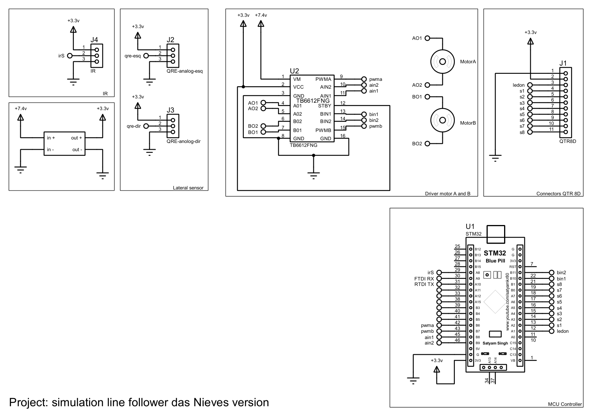
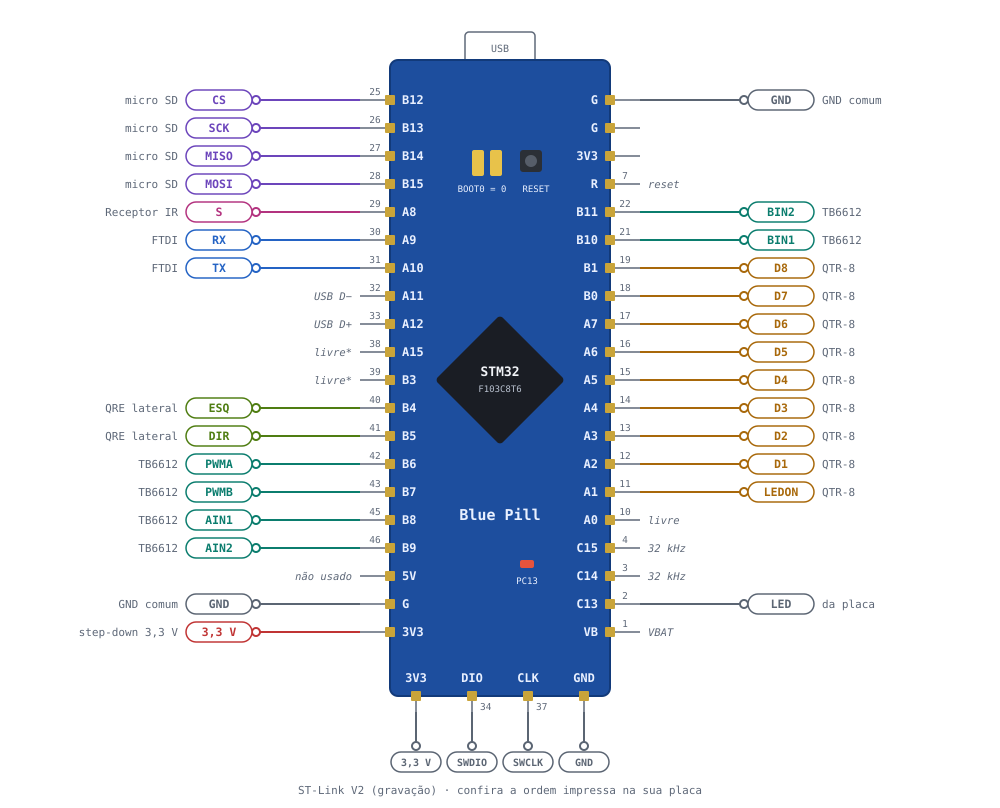

Eletrônica — Besourineo
Esta página descreve o esquemático do Besourineo, a pinagem da Blue Pill e a configuração do STM32CubeMX usada pelo firmware.
Sumário
- Metadados do esquemático
- Visualização do esquemático
- Visualização da pinagem
- Ligações por módulo
- Alimentação
- Configuração no STM32CubeMX
- Observações de projeto
- Histórico de versões
Metadados do esquemático
| Campo | Valor |
|---|---|
| Título | simulation line follower das Nieves version |
| Arquivo | dasNieves_no_simulation.pdsprj (Proteus) |
| Folhas | 1 |
| Data de exportação | 29/10/2026 |
| Autor | Felipe das Neves |
Arquivos
O PDF do esquemático está em dados/esquematico-besourineo.pdf.
Visualização do esquemático

Figura 1: Esquemático do Besourineo: receptor IR, step-down, sensores laterais, driver dos motores, sensor frontal e Blue Pill
Conectores
| Conector | Módulo | Pinos |
|---|---|---|
J1 (QTR8D) |
Sensor frontal | 1 GND, 2 3,3 V, 3 LEDON, 4 a 11 = S1 a S8 |
J2 (QRE-analog-esq) |
QRE esquerdo | 1 3,3 V, 2 sinal, 3 GND |
J3 (QRE-analog-dir) |
QRE direito | 1 3,3 V, 2 sinal, 3 GND |
J4 (IR) |
Receptor IR | 1 3,3 V, 2 sinal (PA8), 3 GND |
Visualização da pinagem

Figura 2: Pinagem da Blue Pill do Besourineo. Os números pequenos são os pinos do chip (LQFP48).
Ligações por módulo
Driver TB6612FNG
| TB6612FNG | Blue Pill | Observação |
|---|---|---|
| PWMA | PB6 | TIM4_CH1, 20 kHz |
| PWMB | PB7 | TIM4_CH2, 20 kHz |
| AIN1 / AIN2 | PB8 / PB9 | Motor A (esquerdo no firmware) |
| BIN1 / BIN2 | PB10 / PB11 | Motor B (direito no firmware) |
| STBY | 3,3 V | Driver sempre habilitado |
| VCC | 3,3 V | Lógica |
| VM | Bateria | Motores |
Sensores
| Sensor | Sinal | Blue Pill |
|---|---|---|
| QTR-8RC | D1 … D6 | PA2 … PA7 |
| QTR-8RC | D7, D8 | PB0, PB1 |
| QTR-8RC | LEDON | PA1 |
| QRE esquerdo | saída (digital) | PB4 |
| QRE direito | saída (digital) | PB5 |
| Receptor IR | S | PA8 |
Comunicação e armazenamento
| Periférico | Sinal | Blue Pill |
|---|---|---|
| FTDI | RX do FTDI / TX do FTDI | PA9 (USART1 TX) / PA10 (USART1 RX) |
| Micro SD | CS / SCK / MISO / MOSI | PB12 / PB13 / PB14 / PB15 |
| ST-Link | SWDIO / SWCLK | PA13 / PA14 |
| LED da placa | — | PC13 (pisca a cada 0,5 s) |
Alimentação
- Bateria: vai no VM do TB6612FNG e na entrada do step-down.
- 3,3 V: alimenta a lógica do TB6612, o QTR-8RC, os QRE, o receptor IR e o micro SD.
- GND: comum entre bateria, driver, Blue Pill, FTDI e módulos.
- FTDI: ligue só TX, RX e GND. O VCC do adaptador fica desligado quando a placa está na bateria.
Pinos que não toleram 5 V
PA0–PA7, PB0, PB1 e PB5 não toleram 5 V. Alimente o QTR-8RC e os QRE em 3,3 V.
Configuração no STM32CubeMX
O firmware depende dos User Labels abaixo, escritos exatamente assim (em minúsculas).
| Pino | Modo | User Label |
|---|---|---|
| PA1 | GPIO_Output | ledon |
| PA2 … PA7, PB0, PB1 | GPIO_Input, No pull | qtr1 … qtr8 |
| PB4 | GPIO_Input, No pull | qre_esq |
| PB5 | GPIO_Input, No pull | qre_dir |
| PB8 / PB9 | GPIO_Output | ain1 / ain2 |
| PB10 / PB11 | GPIO_Output | bin1 / bin2 |
| PB12 | GPIO_Output, nível alto | sd_cs |
| PC13 | GPIO_Output | led_placa |
| PA8 | GPIO_EXTI8, borda de descida, pull-up | ir |
| Bloco | Configuração |
|---|---|
| RCC | HSE: Crystal/Ceramic Resonator |
| SYS | Debug: Serial Wire |
| Clock | HSE 8 MHz → PLL ×9 → 72 MHz; APB1 /2, APB2 /1 |
| TIM4 | Internal Clock; CH1 e CH2 em PWM Generation; Prescaler 0; Counter Period 3599 |
| USART1 | Asynchronous, 115200, 8N1 |
| SPI2 | Full-Duplex Master, NSS por software, Prescaler 128 |
| NVIC | EXTI line[9:5] habilitada |
| Project Manager | Toolchain / IDE: STM32CubeIDE |
Observações de projeto
- Motor esquerdo no canal A: o firmware considera o motor A como o esquerdo. Se os motores estiverem trocados no TB6612, as curvas saem invertidas.
- USB da placa: PA11 e PA12 ficam livres e não devem ser usados enquanto o USB da Blue Pill estiver em uso.
- Receptor IR: mantenha um capacitor de 100 nF entre VCC e GND perto do receptor, por causa do ruído dos motores.
- QRE sem ligação no esquemático: os conectores J2 e J3 têm os rótulos
qre-esqeqre-dir, mas esses rótulos não aparecem na Blue Pill. O firmware lê os QRE no PB4 e no PB5; falta colocar os rótulos nesses pinos. - Micro SD fora do esquemático: o firmware usa o micro SD no SPI2 (PB12 a PB15), mas o módulo não está desenhado. Os pinos PB12 a PB15 aparecem sem ligação.
- FTDI sem conector: o PA9 e o PA10 têm os rótulos
FTDI RXeRTDI TX, mas não há conector para o FTDI no desenho. O rótuloRTDI TXtambém tem um erro de digitação (deveria serFTDI TX). - Rótulo do QRE direito: o J3 está escrito
QRE-anolog-dir. É só o nome do componente, sem efeito nas ligações.
Histórico de Versões
| Versão | Descrição | Autor(es) | Data de Produção | Revisor(es) |
|---|---|---|---|---|
1.0 |
Pinagem e configuração do CubeMX | Felipe das Neves | 29/10/2026 | — |
1.1 |
Esquemático do Proteus e tabela de conectores | Felipe das Neves | 29/10/2026 | — |